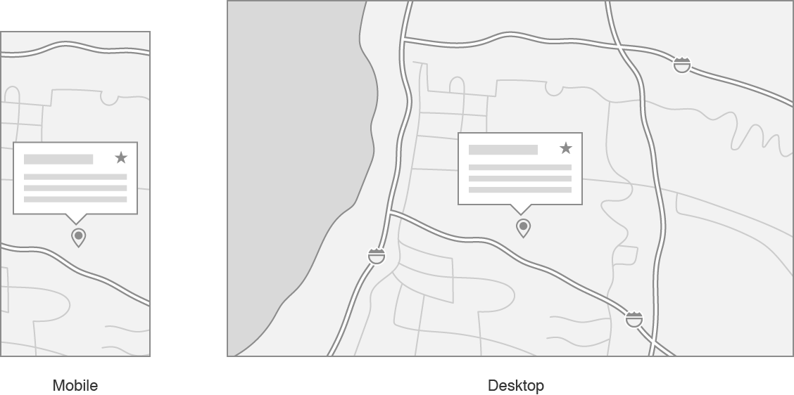

This sample app searches for Apple Store locations and shows them on a map. The user can choose a store’s map annotation to see its address and mark it as a favorite. As the user changes visible regions or inspects individual stores, the app uses Handoff to share these activities with the user’s other devices. If the user changes devices, they can use Handoff to launch the app and return to what they were doing on the original device.
この見本のアプリは、アップルストアの場所を検索してそれらを地図上に示します。ユーザは、あるストアのもつ地図注釈を選んで、その住所を見たりそれをお気に入りとして印できます。ユーザが可視領域を変更するまたは個々のストアを調べるとき、アプリはHandoffを使ってそれらアクティビティをユーザのもつ他のデバイスで共有します。ユーザがデバイスを替えるならば、彼ら彼女らはHandoffを使ってアプリを起動して彼ら彼女らが元のデバイス上でしていたことに戻れます。

The sample project builds for both macOS and iOS, so you can run it on a Mac, iPhone, and iPad. The project does not contain a watchOS or tvOS app.
見本プロジェクトは、macOSとiOSの両方に対してビルドします、なのであなたはそれをMac、iPhone、そしてiPad上で実行できます。プロジェクトは、watchOSまたはtvOSアプリを含みません。
Configure the Sample Code Project
見本のコードプロジェクトを構成設定する
HandoffMapViewer must be run on actual devices; the iOS version cannot run in Simulator.HandoffMapViewerは、実際のデバイス上で実行されなければなりません；iOSバージョンはSimulatorでは実行できません。
To configure your Mac to run the sample code project, open System Preferences and do the following:
あなたのMacを構成設定して見本コードプロジェクトを実行するには、システム環境設定を開いて以下を行ってください：
In Bluetooth settings, click Turn Bluetooth On.
Bluetooth設定において、「Bluetooth を入りにする」をクリックします。
In iCloud settings, verify that you are signed into iCloud. If you are not, click Sign In and enter your Apple ID and password.
iCloud設定において、あなたがiCloudにサインインすることを確かめます。あなたがしてないならば、「サインイン」をクリックしてあなたのApple IDとパスワードを入力します。
In General settings, select “Allow Handoff between this Mac and your iCloud devices”.
「一般」設定において、「この Mac と iCloud デバイス間での Handoff を許可」をクリックします。
To configure your iOS devices to run the sample code project, open the Settings app and do the following:
あなたのiOSデバイスを構成設定して見本コードプロジェクトを実行するには、「設定」アプリを開いて以下を行ってください：
In Bluetooth settings, tap to turn on Bluetooth.
Bluetooth設定において、タップしてBluetoothを入りにします。
In the user banner at the top of Settings, tap to sign in with your Apple ID if you haven’t already.
「設定」の上部でのユーザバナーにおいて、タップしてあなたのApple IDでサインインします、もしあなたが既にそうしていないならば。
Then tap to turn on iCloud.
In General settings, tap to turn on Handoff.
「一般」設定において、タップしてHandoffを入りにします。
To configure the sample code project so that it can run on your devices, open the HandoffMapViewer.xcodeproj project in Xcode and do the following:
見本コードプロジェクトを構成設定してそれがあなたのデバイス上で動作できるようにするには、HandoffMapViewer.xcodeprojプロジェクトをXcodeにおいて開いて、そして以下を行ってください：
Select the HandoffMapViewer project at the top of the Project Navigator, select the HandoffMapViewerMac target, select the “General” tab, and change the Bundle Identifier to a unique value, such as one that uses your organization’s name instead of com.example.HandoffMapViewerプロジェクトをProject Navigatorの上部で選択します、HandoffMapViewerMacターゲットを選びます、“General” タブを選択します、そしてBundle Identifierを特有な値に変更します、たとえばあなたの組織名を使うものなどをcom.exampleの代わりに。
With the HandoffMapViewer project still selected in the Project Navigator, select the HandoffMapViewerIOS target, select the “General” tab, and change the Bundle Identifier to the same value you used in the previous step.HandoffMapViewerが依然としてProject Navigatorにおいて選択された状態で、HandoffMapViewerIOSターゲットを選びます、“General” タブを選びます、そしてBundle Identifierをあなたが前の段階で使ったのと同じ値に変更します。
To run the macOS version, build the HandoffMapViewerMac target, and run it locally, or copy the application file from the Products folder to another Mac and run it there.
macOS版を実行するには、HandoffMapViewerMacターゲットをビルドします、そしてそれをローカルに実行します、またはアプリケーションファイルをProductsフォルダから別のMacにコピーしてそれをそこで実行します。
To run the iOS version, build the HandoffMapViewerIOS target and run it on one of your connected iOS devices.
iOS版を実行するには、HandoffMapViewerIOSターゲットをビルドします、そしてそれをあなたの接続済みiOSデバイスの１つで実行します。
Define User Activities
ユーザアクティビティを定義する
You implement Handoff by determining specific activities that a user can perform in your app, and whose state you can reproduce on a second device. The sample app has two user activities:
あなたはHandoffの実装を、ユーザがあなたのアプリにおいて実行できる特定のアクティビティを、そしてあなたが第２のデバイス上で再現可能なそれの状態を決定することによって行います。この見本アプリは、２つのユーザアクティビティを持ちます：
Viewing a map region.
ある地図領域を眺める。
Viewing the details of a specific Apple Store and editing its “favorite” value.
特定のアップルストアの詳細を眺める、そしてそれの “お気に入り” 値を編集する。
You use the app’s Info.plist to tell Handoff which activities your app can continue, by providing an entry with the key name NSUserActivityTypes. The type of this entry is Array, and each member is a String representing a supported Handoff activity.
あなたはアプリのもつInfo.plistを使って、Handoffにあなたのアプリが継続できるアクティビティはどれかを教えます、キー名NSUserActivityTypesでの登録項目を提供することによって。この登録項目の型はArrayです、そして各項はサポートされるHandoffアクティビティを表しているStringです。
In the sample app, the macOS and iOS targets include the map-viewing and store-editing activities in their Info.plist files.
At runtime, you represent a user activity with the NSUserActivity type. You initialize a user activity object with a string identifier, the same one used earlier in the Info.plist.
あなたは、ユーザアクティビティオブジェクトを文字列識別子、前のInfo.plistにおいて使われるのと同じもので初期化します。
This object also has an isEligibleForHandoff property that exposes the activity to Handoff, and a userInfo dictionary containing data needed to recreate the app’s state on the receiving device.
In the sample app, the MapViewController manages two NSUserActivity instances: one each for the map-viewing and store-editing activities. When the map region changes, it sets the userActivity property (defined in NSViewController for macOS and UIViewController for iOS) to the map-viewing activity. It makes this the current activity, replacing any other activity that may have previously been sent to Handoff, and sets needsSave to true, indicating that the activity has new data to send to remote devices.
見本アプリにおいて、MapViewControllerは２つのNSUserActivityインスタンス：map-viewingとstore-editingアクティビティに対してそれぞれ１つを管理します。地図領域が変化する場合、それはuserActivityプロパティ（macOSではNSViewControllerにおいて、そしてiOSではUIViewControllerにおいて定義されます）をmap-viewingアクティビティに設定します。それはこれを、以前にHandoffに送られたかもしれない何らかの他のアクティビティを置き換えて、現在のアクティビティにします、そしてneedsSaveを、そのアクティビティがリモートデバイスに送る新しいデータを持つことを指し示しているtrueに設定します。
Calling needsSave on the view controller’s userActivity eventually results in a callback to the method updateUserActivityState(_:), declared in UIResponder on iOS and NSResponder on macOS. This is the app’s opportunity to refresh the activity object’s userInfo before Handoff receives the activity.
これはアプリにとって、アクティビティオブジェクトのもつuserInfoをHandoffがそのアクティビティを受け取る前にリフレッシュする好機です。
The implementation in the sample app calls a convenience function updateViewingRegion(_:), defined in an extension on NSUserActivity, to encode the map view’s MKCoordinateRegion into key-value entries in the userInfo dictionary.
When you move to another device, macOS or iOS indicates that a Handoff activity is available. macOS displays a Handoff icon at the beginning of the Dock, with a badge indicating the type of source device. On iOS, the Handoff banner appears at the bottom of the screen in the app switcher, showing the app and source device name.
あなたが別のデバイスに移る時、macOSやiOSは、Handoffアクティビティが利用可能であることを指し示します。macOSは、HandoffアイコンをDockの初めの部分で、元のデバイスの種類を指し示しているバッジとともに表示します。iOSでは、HandoffバナーはAppスイッチャーの画面下で現れて、アプリと元のデバイスの名前を示します。
When you launch the app using the Handoff prompts, the system calls methods in UIApplicationDelegate (iOS) or NSApplicationDelegate (macOS) to provide the Handoff activity. The application(_:continue:restorationHandler:) method provides the activity, along with a completion handler that you call with an array of view controllers that can handle the activity. The implementation in the iOS app delegate just finds and passes the first view controller, an instance of MapViewController.
あなたがアプリをHandoffプロンプトを使って起動する場合、システムはいくつかのメソッドをUIApplicationDelegate (iOS) またはNSApplicationDelegate (macOS) において呼び出してHandoffアクティビティを提供します。application(_:continue:restorationHandler:)メソッドは、アクティビティを、ある完了ハンドラと一緒に提供します、それはアクティビティを取り扱い可能なビューコントローラの配列とともにあなたが呼び出すものです。iOSアプリ委任先における実装は、単にファーストビューコントローラ、MapViewControllerのインスタンスを見つけて渡すだけです。
The implementation in the macOS app delegate is similar, except that it traverses the key window’s hierarchy, rather than the iOS navigation controller stack:
macOSアプリ委任先における実装は似ていますが、それがキーウインドウのもつ階層を辿っていくことが異なります、iOSナビゲーションコントローラスタックではなくて：
The view controllers receive the NSUserActivity in the restoreUserActivityState(_:) method. MapViewController inspects the activity to determine whether it is the map-viewing or the store-editing activity, and then updates the UI as needed. The map-viewing activity case resets the map region, by creating a new MKCoordinateRegion from the values in the userInfo.
ビューコントローラは、NSUserActivityをrestoreUserActivityState(_:)メソッドにおいて受け取ります。MapViewControllerは、アクティビティを調べて、それが地図閲覧またはストア編集アクティビティであるかどうかを決定します、そしてそれらかUIを必要に応じて更新します。地図閲覧アクティビティの場合は地図領域を再設定します、新しいMKCoordinateRegionをuserInfoの中の値から作成することによって。
In the case of the store-editing activity, the view controller also retrieves the store’s URL and location coordinates from the userInfo. The app waits until the map adds a MKAnnotationView for the store being edited, so it knows where to anchor the popover.
ストア編集アクティビティの場合では、ビューコントローラはまた、ストアのもつURLと位置座標をuserInfoからとってきます。アプリは、地図がMKAnnotationViewをその編集されているストアのために加えるまで待機します、なのでそれはポップオーバーを据えつけるところがわかります。
Update the Original Device’s State (Optional)
元のデバイスのもつ状態を更新する（随意）
The NSUserActivity class has a delegate property of type NSUserActivityDelegate. This notifies the originating device when you continue an activity on another device. The originating device can use this to clean up its own UI state.NSUserActivityクラスは、型NSUserActivityDelegateのdelegateプロパティを持ちます。これは、元となるデバイスを、あなたがアクティビティを別のデバイス上で継続する場合に通知します。元となるデバイスは、これを使ってそれ自身のUI状態をきれいにします。
In the sample app, tapping a pin for an Apple Store shows a popover with details about the store and a switch (iOS) or checkbox (macOS) to mark the store as a favorite. The MapViewContoller represents this activity as the storeEditingActivity property, and sets itself as the activity’s delegate. When you continue editing on a second device, the delegate on the originating device receives a notification that this activity has been continued, and dismisses its own popover.
見本アプリでは、あるアップルストアに対するピンをタップすることは、ストアについての詳細およびストアをお気に入りとして印するスイッチ（iOS）かチェックボックス（macOS）を持つポップオーバーを表示します。MapViewContollerは、このアクティビティをstoreEditingActivityプロパティとして表します、そしてそれ自身をアクティビティのもつ委任先として設定します。あなたが第２のデバイス上で編集を継続する場合、元のデバイス上の委任先は、このアクティビティが継続されたという通知を受け取ります、そしてそれ自身のポップオーバーを退出させます。
Provide a continuous user experience by capturing information from your app and displaying this information as proactive suggestions across the system.
情報をあなたのアプリからキャプチャして、この情報を積極的提案としてシステムの至る所で表示することによって、途切れのないユーザ体験を提供してください。